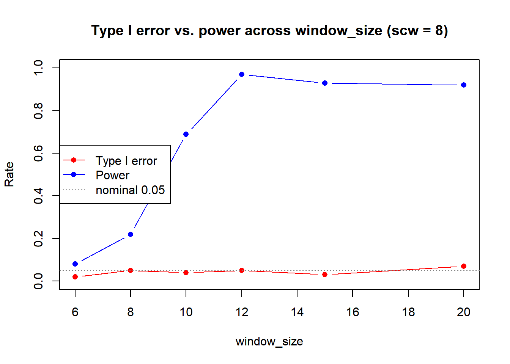
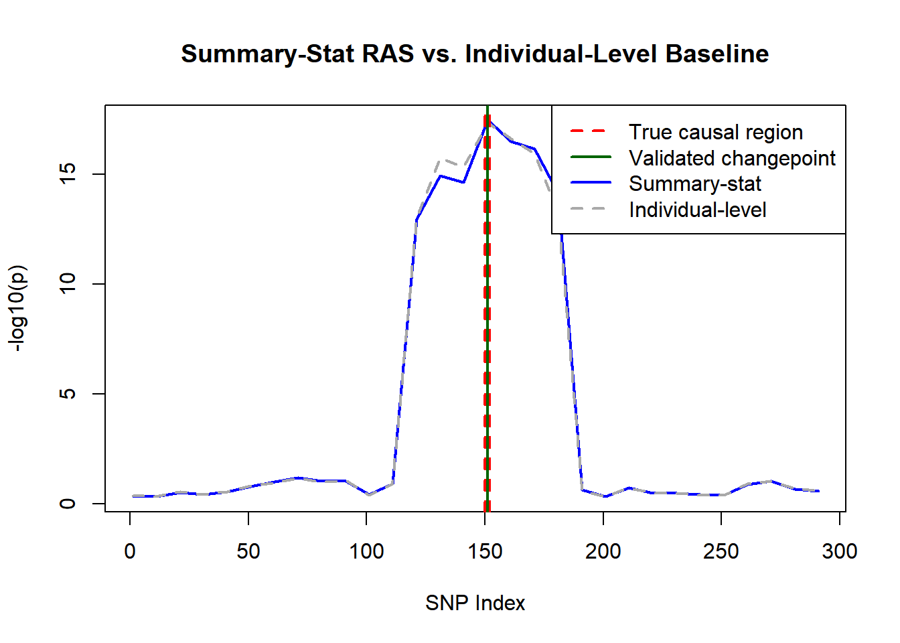

Last updated: 2026-08-13
Checks: 6 1
Knit directory: ras-ss/
This reproducible R Markdown analysis was created with workflowr (version 1.7.2). The Checks tab describes the reproducibility checks that were applied when the results were created. The Past versions tab lists the development history.
Great! Since the R Markdown file has been committed to the Git repository, you know the exact version of the code that produced these results.
Great job! The global environment was empty. Objects defined in the global environment can affect the analysis in your R Markdown file in unknown ways. For reproduciblity it’s best to always run the code in an empty environment.
The command set.seed(20260710) was run prior to running
the code in the R Markdown file. Setting a seed ensures that any results
that rely on randomness, e.g. subsampling or permutations, are
reproducible.
Great job! Recording the operating system, R version, and package versions is critical for reproducibility.
To ensure reproducibility of the results, delete the cache directory
01_simulation_cache and re-run the analysis. To have
workflowr automatically delete the cache directory prior to building the
file, set delete_cache = TRUE when running
wflow_build() or wflow_publish().
Great job! Using relative paths to the files within your workflowr project makes it easier to run your code on other machines.
Great! You are using Git for version control. Tracking code development and connecting the code version to the results is critical for reproducibility.
The results in this page were generated with repository version 90cbf4f. See the Past versions tab to see a history of the changes made to the R Markdown and HTML files.
Note that you need to be careful to ensure that all relevant files for
the analysis have been committed to Git prior to generating the results
(you can use wflow_publish or
wflow_git_commit). workflowr only checks the R Markdown
file, but you know if there are other scripts or data files that it
depends on. Below is the status of the Git repository when the results
were generated:
Ignored files:
Ignored: .Rhistory
Ignored: .Rproj.user/
Ignored: analysis/01_simulation_cache/
Ignored: analysis/02_simulation_cache/
Ignored: analysis/03_simulation_cache/
Unstaged changes:
Modified: analysis/_site.yml
Note that any generated files, e.g. HTML, png, CSS, etc., are not included in this status report because it is ok for generated content to have uncommitted changes.
These are the previous versions of the repository in which changes were
made to the R Markdown (analysis/01_simulation.Rmd) and
HTML (docs/01_simulation.html) files. If you’ve configured
a remote Git repository (see ?wflow_git_remote), click on
the hyperlinks in the table below to view the files as they were in that
past version.
| File | Version | Author | Date | Message |
|---|---|---|---|---|
| html | 920287b | Anson Li | 2026-08-13 | Build site. |
| Rmd | 3df293f | Anson Li | 2026-08-13 | commit changes |
| html | 3df293f | Anson Li | 2026-08-13 | commit changes |
| html | 06eab4c | Anson Li | 2026-07-29 | Build site. |
| Rmd | f69a562 | Anson Li | 2026-07-29 | Add notes about knitr caching causing times that don’t represent full runtimes |
| html | 67aab7b | Anson Li | 2026-07-29 | Build site. |
| Rmd | 51545a0 | Anson Li | 2026-07-29 | Fix formatting issues and figures not appearing in 01_simulation |
| html | 175f014 | Anson Li | 2026-07-27 | Build site. |
| Rmd | bc3aa54 | Anson Li | 2026-07-27 | wflow_publish("analysis/01_simulation.Rmd") |
| html | 01b3815 | Anson Li | 2026-07-27 | Build site. |
| Rmd | 911a882 | Anson Li | 2026-07-26 | rebuild site |
| html | 911a882 | Anson Li | 2026-07-26 | rebuild site |
| html | 82201cd | Anson Li | 2026-07-23 | Build site. |
| Rmd | dc8e1bb | Anson Li | 2026-07-23 | cleanup output and improve simulation clarity |
| html | dc8e1bb | Anson Li | 2026-07-23 | cleanup output and improve simulation clarity |
| html | 56e4190 | Anson Li | 2026-07-21 | Build site. |
| Rmd | 8312aee | Anson Li | 2026-07-21 | wflow_publish("01_simulation.Rmd") |
| html | 21eec7e | Anson Li | 2026-07-21 | Build site. |
| Rmd | d0d1d70 | Anson Li | 2026-07-21 | wflow_publish("01_simulation.Rmd") |
| Rmd | cc74dfc | Anson Li | 2026-07-21 | 7/21/2026, recent changes |
| html | cc74dfc | Anson Li | 2026-07-21 | 7/21/2026, recent changes |
| Rmd | df77b46 | Anson Li | 2026-07-17 | basic simulation attempt |
| html | df77b46 | Anson Li | 2026-07-17 | basic simulation attempt |
Pilot/tuning run. The main paper-style study is Paper Replication.
n_snps <- 300
n_disc <- 1000 # discovery cohort, method A (small for speed)
n_targ <- 1000 # target cohort (small for speed)
rho <- 0.8 # AR(1) correlation for LD
# adaptive sliding window
skip1 <- 10 # scan every 10th SNP for speed
skip2 <- 3 # test window sizes in increments of 3
min_window_size <- 3
max_window_size <- 30
# quality control
prune_r2 <- 0.2 # LD pruning threshold
# ridge_lambda removed, breaks N(0,1) null distribution
causal_snps <- c(150, 151, 152)
effect_size <- 0.5
# p-value thresholds
slope_thresh <- 1e-3
davies_thresh <- 1e-3
# reproducibility
base_seed <- 35# Autoregressive AR(1) matrix with rho = 0.8
# simulates the LD matrix
R_true <- outer(1:n_snps, 1:n_snps, function(i, j) rho^abs(i - j))
# generate n fake patients based on the LD data
sim_genotypes <- function(n, R) {
X <- rmvnorm(n, sigma = R)
X <- round(X) # DNA isn't continuous
pmin(pmax(X, 0), 2) # 0, 1, 2 mutated alleles
}
# run the random simulation
set.seed(base_seed)
X_ref <- sim_genotypes(10000, R_true)
R_emp <- cor(X_ref) # get the empirical LD matrix to use later instead of the real one
# greedy forward pruning, drop SNPs in high LD with a kept SNP
prune_ld <- function(R, thresh) {
keep <- rep(TRUE, nrow(R))
for (i in seq_len(nrow(R) - 1)) {
if (!keep[i]) next
for (j in (i + 1):nrow(R)) {
if (keep[j] && R[i, j]^2 > thresh) keep[j] <- FALSE
}
}
keep
}
prune_filter <- prune_ld(R_emp, prune_r2)
cat("Surviving SNPs after LD pruning:", sum(prune_filter), "of", n_snps, "\n")Surviving SNPs after LD pruning: 100 of 300 # runs linear regression for every SNP to measure correlation with phenotype y
get_marginal_stats <- function(X, y) {
# Vectorized OLS for massive speedup
yc <- y - mean(y)
Xc <- sweep(X, 2, colMeans(X), "-")
sxx <- colSums(Xc^2)
sxy <- as.numeric(crossprod(Xc, yc))
beta <- sxy / sxx
syy <- sum(yc^2)
rss <- pmax(syy - beta * sxy, 0)
se <- sqrt((rss / (length(y) - 2)) / sxx)
z <- beta / se
z[!is.finite(z)] <- 0
list(beta = beta, z = z)
}
# T_burden = w'Z / sqrt(w'Rw), from problem statement
t_burden <- function(w, Z, R) {
denom <- sqrt(as.numeric(t(w) %*% R %*% w))
if (!is.finite(denom) || denom <= 0) return(0)
as.numeric((t(w) %*% Z) / denom)
}
# summary-stat RAS scan: for each pivotal SNP, find window with max -log10(p)
scan_ss <- function(b_disc, z_targ, R, mask) {
n_snps <- length(b_disc)
sites <- seq(1, n_snps, by = skip1)
sub_windows <- c(0, seq(min_window_size, max_window_size, by = skip2))
if (sub_windows[length(sub_windows)] != max_window_size) sub_windows <- c(sub_windows, max_window_size)
y_profile <- sapply(sites, function(s) {
best_p <- 1
for (ws in sub_windows) {
win_snps <- if (ws == 0) s else max(1, s - ws):min(n_snps, s + ws)
win_snps <- win_snps[mask[win_snps]]
if (length(win_snps) < 1) next
w_sub <- b_disc[win_snps]
z_sub <- z_targ[win_snps]
R_sub <- R[win_snps, win_snps, drop = FALSE]
num <- sum(w_sub * z_sub)
denom <- sqrt(as.numeric(w_sub %*% R_sub %*% w_sub))
if (!is.finite(denom) || denom <= 0) next
t_val <- num / denom
best_p <- min(best_p, 2 * pnorm(-abs(t_val)))
}
-log10(max(best_p, .Machine$double.xmin))
})
list(x = sites, y = y_profile)
}
# NOTE: no num_rep averaging here. method A has fixed disc/targ stats, nothing to resplit
one_rep <- function(true_beta, seed) {
set.seed(seed)
X_d <- sim_genotypes(n_disc, R_true)
X_t <- sim_genotypes(n_targ, R_true)
y_d <- X_d %*% true_beta + rnorm(n_disc, 0, 3)
y_t <- X_t %*% true_beta + rnorm(n_targ, 0, 3)
disc <- get_marginal_stats(X_d, y_d)
targ <- get_marginal_stats(X_t, y_t)
scan <- scan_ss(disc$beta, targ$z, R_emp, prune_filter)
list(scan = scan, X_t = X_t, y_t = y_t, b_disc = disc$beta)
}
# null = no effect, signal = effect at causal SNPs
null_beta <- rep(0, n_snps)
signal_beta <- rep(0, n_snps)
signal_beta[causal_snps] <- effect_size# scw=5 (package default) only gave ~17-20% first-pass acceptance on true signal
# because slope re-check window sits inside the flat top of the plateau
# scw=8 fixes this, acceptance goes to ~100%
detect_peaks <- function(scan, window_size, scw = 8) {
stopifnot(window_size < length(scan$x))
tryCatch({
# first pass: changepoint detection
# use sink() to hide cat() verbose
null_con <- file(nullfile(), open = "wt")
sink(null_con, type = "output")
sink(null_con, type = "message")
cp <- ras_detect(
x = scan$x, y = scan$y,
window_size = window_size,
slope_check_window_size = scw,
slope.p.values.threshold.left = slope_thresh,
slope.p.values.threshold.right = slope_thresh
)
# second pass: local Davies validation
val <- suppressWarnings(ras_validate(
this.result = cp, x = scan$x, y = scan$y,
this.start = 1, this.skip = skip1,
second_window_size = 15, min_signal = 2.5,
p.value.threshold = davies_thresh
))
# stop redirecting output
sink(type = "message")
sink(type = "output")
close(null_con)
list(val = val, candidates = cp$all.changepoints, error = FALSE)
}, error = function(e) {
# ensure sink is turned off even if an error occurs
try({ sink(type = "message"); sink(type = "output"); close(null_con) }, silent = TRUE)
list(val = list(tau_hats = numeric(0)), candidates = NULL, error = TRUE)
})
}n_sweep <- 100
ws_candidates <- c(6, 8, 10, 12, 15, 20)
sweep_df <- data.frame(window_size = ws_candidates,
type1 = NA_real_, power = NA_real_, edge = NA_real_)
# test each candidate
for (k in seq_along(ws_candidates)) {
ws <- ws_candidates[k]
# null reps: any detection = type I error
null_res <- suppressWarnings(future_lapply(seq_len(n_sweep), function(s) {
scan <- one_rep(null_beta, seed = 10000 * ws + s)$scan
length(detect_peaks(scan, ws, scw = 8)$val$tau_hats) > 0
}))
# power reps: land on causal region or just trailing edge
power_res <- suppressWarnings(future_lapply(seq_len(n_sweep), function(s) {
scan <- one_rep(signal_beta, seed = 20000 * ws + s)$scan
tau <- detect_peaks(scan, ws, scw = 8)$val$tau_hats
c(center = any(tau >= 130 & tau <= 170),
edge = any(tau >= 185 & tau <= 195) && !any(tau >= 130 & tau <= 170))
}))
sweep_df$type1[k] <- mean(unlist(null_res))
sweep_df$power[k] <- mean(sapply(power_res, function(x) x["center"]))
sweep_df$edge[k] <- mean(sapply(power_res, function(x) x["edge"]))
}
print(sweep_df) window_size type1 power edge
1 6 0.02 0.08 0
2 8 0.05 0.22 0
3 10 0.04 0.69 0
4 12 0.05 0.97 0
5 15 0.03 0.93 0
6 20 0.07 0.92 0# choose the window size with the maximum detection power and lowest Type I Error rate
best_ws <- ws_candidates[which.max(sweep_df$power - sweep_df$type1)]
cat("Chosen window_size:", best_ws, "(scw = 8)\n")Chosen window_size: 12 (scw = 8)print(sweep_df[sweep_df$window_size == best_ws, ]) window_size type1 power edge
4 12 0.05 0.97 0n_null <- 500
null_hits <- unlist(suppressWarnings(future_lapply(seq_len(n_null), function(s) {
scan <- one_rep(null_beta, seed = 100000 + s)$scan
length(detect_peaks(scan, best_ws, scw = 8)$val$tau_hats) > 0
})))
cat(sprintf("\nEmpirical Type I error over %d reps: %.3f\n", n_null, mean(null_hits)))
Empirical Type I error over 500 reps: 0.038# Statistical power test by running signal_beta (patients w/ phenotype at SNPs 150-152)
n_power <- 200
power_res <- suppressWarnings(future_lapply(seq_len(n_power), function(s) {
scan <- one_rep(signal_beta, seed = 200000 + s)$scan
tau <- detect_peaks(scan, best_ws, scw = 8)$val$tau_hats
c(center = any(tau >= 130 & tau <= 170),
edge = any(tau >= 185 & tau <= 195) && !any(tau >= 130 & tau <= 170))
}))
hit_center <- sapply(power_res, function(x) x["center"])
hit_edge <- sapply(power_res, function(x) x["edge"])
cat(sprintf("\nEmpirical power (centered detections) over %d reps: %.3f\n", n_power, mean(hit_center)))
Empirical power (centered detections) over 200 reps: 0.935cat(sprintf("Edge-only detections (trailing edge, not center): %.3f\n", mean(hit_edge)))Edge-only detections (trailing edge, not center): 0.000results <- data.frame(
Metric = c("Type I error", "Power"),
Value = c(mean(null_hits), mean(hit_center)),
Reps = c(n_null, n_power)
)
knitr::kable(results, digits = 3, caption = "Empirical simulation results")| Metric | Value | Reps |
|---|---|---|
| Type I error | 0.038 | 500 |
| Power | 0.935 | 200 |
plot(sweep_df$window_size, sweep_df$type1, type = "b", col = "red",
ylim = c(0, 1), xlab = "window_size", ylab = "Rate",
main = "Type I error vs. power across window_size (scw = 8)", pch = 16)
lines(sweep_df$window_size, sweep_df$power, type = "b", col = "blue", pch = 16)
abline(h = 0.05, lty = 3, col = "gray50")
legend("left", legend = c("Type I error", "Power", "nominal 0.05"),
col = c("red", "blue", "gray50"), lty = c(1, 1, 3), pch = c(16, 16, NA))
# individual-level RAS for comparison (original method)
indiv_scan <- function(scan, X_t, y_t, b_disc) {
sub_windows <- c(0, seq(min_window_size, max_window_size, by = skip2))
if (sub_windows[length(sub_windows)] != max_window_size) sub_windows <- c(sub_windows, max_window_size)
sapply(scan$x, function(s) {
best_p <- 1
for (ws in sub_windows) {
win_snps <- if (ws == 0) s else max(1, s - ws):min(n_snps, s + ws)
win_snps <- win_snps[prune_filter[win_snps]]
if (length(win_snps) < 1) next
lprs <- X_t[, win_snps, drop = FALSE] %*% b_disc[win_snps]
fit <- suppressWarnings(summary(lm(y_t ~ lprs)))
p <- if (nrow(fit$coefficients) > 1) fit$coefficients[2, 4] else 1
best_p <- min(best_p, p)
}
-log10(max(best_p, .Machine$double.xmin))
})
}
# draw visualization for comparison
rep_out <- one_rep(signal_beta, seed = 300000)
ss_profile <- rep_out$scan
indiv_y <- indiv_scan(ss_profile, rep_out$X_t, rep_out$y_t, rep_out$b_disc)
final <- detect_peaks(ss_profile, best_ws, scw = 8)
plot(ss_profile$x, ss_profile$y, type = "l", col = "blue", lwd = 2,
xlab = "SNP Index", ylab = "-log10(p)",
main = "Summary-Stat RAS vs. Individual-Level Baseline")
lines(ss_profile$x, indiv_y, col = "darkgray", lty = 2, lwd = 2)
abline(v = causal_snps, col = "red", lty = 2, lwd = 2)
if (length(final$val$tau_hats) > 0) {
abline(v = final$val$tau_hats, col = "darkgreen", lwd = 2)
legend("topright",
legend = c("True causal region", "Validated changepoint", "Summary-stat", "Individual-level"),
col = c("red", "darkgreen", "blue", "darkgray"), lty = c(2, 1, 1, 2), lwd = 2)
} else {
legend("topright",
legend = c("True causal region", "Summary-stat", "Individual-level"),
col = c("red", "blue", "darkgray"), lty = c(2, 1, 2), lwd = 2)
}
end_time <- Sys.time()
runtime_seconds <- as.numeric(difftime(end_time, start_time, units = "secs"))
cat(paste0("**Total Knitting Time:** ", round(runtime_seconds, 2), " seconds"))**Total Knitting Time:** 3.45 seconds# NOTE: time with knitr caching
sessionInfo()R version 4.6.0 (2026-04-24 ucrt)
Platform: x86_64-w64-mingw32/x64
Running under: Windows 11 x64 (build 29639)
Matrix products: default
LAPACK version 3.12.1
locale:
[1] LC_COLLATE=Spanish_Latin America.utf8
[2] LC_CTYPE=Spanish_Latin America.utf8
[3] LC_MONETARY=Spanish_Latin America.utf8
[4] LC_NUMERIC=C
[5] LC_TIME=Spanish_Latin America.utf8
time zone: America/Chicago
tzcode source: internal
attached base packages:
[1] stats graphics grDevices utils datasets methods base
other attached packages:
[1] future.apply_1.20.2 future_1.75.0 RAS_0.1.12
[4] mvtnorm_1.4-2 workflowr_1.7.2
loaded via a namespace (and not attached):
[1] jsonlite_2.0.0 compiler_4.6.0 promises_1.5.0 Rcpp_1.1.2
[5] stringr_1.6.0 git2r_0.36.2 parallel_4.6.0 callr_3.8.0
[9] later_1.4.8 jquerylib_0.1.4 globals_0.19.1 splines_4.6.0
[13] yaml_2.3.12 fastmap_1.2.0 lattice_0.22-9 R6_2.6.1
[17] knitr_1.51 MASS_7.3-66 tibble_3.3.1 rprojroot_2.1.1
[21] bslib_0.11.0 pillar_1.11.1 rlang_1.3.0 cachem_1.1.0
[25] stringi_1.8.7 httpuv_1.6.17 xfun_0.60 getPass_0.2-4
[29] fs_2.1.0 sass_0.4.10 segmented_2.2-1 otel_0.2.0
[33] cli_3.6.6 magrittr_2.0.5 grid_4.6.0 digest_0.6.39
[37] processx_3.9.0 rstudioapi_0.19.0 nlme_3.1-170 lifecycle_1.0.5
[41] vctrs_0.7.3 evaluate_1.0.5 glue_1.8.1 listenv_1.0.0
[45] whisker_0.4.1 codetools_0.2-20 parallelly_1.48.0 rmarkdown_2.31
[49] httr_1.4.8 tools_4.6.0 pkgconfig_2.0.3 htmltools_0.5.9